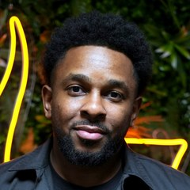

Kiz Summit Exchange · Kage Edition
Urban Kiz History
Keynote
Charles + Laurent
Funded in part by the Austin Arts, Culture, Music and Entertainment (AACME) Program
Past
Before it had a name
From Angola to Paris to everywhere
De l'Angola à Paris, puis partout
Confirm dates + French
Before 2010Avant 2010
The rootsLes racines
Kizomba from Angola, 1980s. Ghetto Zouk from Rotterdam.La kizomba d'Angola, années 1980. Le ghetto zouk de Rotterdam.
2011 to 20142011 à 2014
The Paris fusion eraL'ère de la fusion à Paris
One movement, many names: Kizomba 2.0, French Style, New Style.Un mouvement, plusieurs noms.
May 10, 201510 mai 2015
The nameLe nom
"Urban Kiz" brings the style under one banner.« Urban Kiz » réunit le style sous une seule bannière.
TodayAujourd'hui
The flavorsLes styles
Elegant. Douceur. Technical Stepping. Lifts & Tricks. Afro Urban Kiz.
A scene, not a founder
Une scène, pas un fondateur
Confirm names + French
Laurent
Adeline
Albir Rojas
Curtis
Yami
Steffi
Sherazade
Ennuel
Hakima
Félicien
Isabelle
Enah
Carolina
Who's missing?Qui manque ?
Laurent to approve quote + French
"It was people leaving the class, people complaining: we don't dance enough, it's too much theory.
« Il y avait des gens qui quittaient le cours, des gens qui se plaignaient : on ne danse pas assez, il y a trop de théorie.
And then today, everyone wants to be musical."Et aujourd'hui, tout le monde veut être musical. »
LAURENT, AUG 14, 2026
Video test A · streams from YouTube
L&A Kizomba: Technical Steps 4 · Evokeez World, 2014
Needs internet. Click to play, starts at 0:45. Then press the right arrow to move on.
Video test B · saved clip, no YouTube
Laurent & Adeline · Neo Kizomba Festival 2015 · 30 second cut
From the laptop at the studio, this needs no internet. Right arrow plays it, right arrow again moves on.
Present
Two villages, one summit
Instructor spotlight
Laurent built stages for other dancers

Also DJ Low. Stepped away in 2019, by choice.
- Show Your Style20+ editions, created around 2015
- Olympiades of KizombaUrban, Sensual and Authentic categories
- Online Kizomba School
- Amazing Follows
- Kizomba XperienceDisneyland Paris
Two villages
Paris and Austin
Paris
- A boom before the world knew the name
- It went international through the salsa festivals
- Laurent builds Show Your Style and the Olympiades
Austin
- 2015: Laurent's first time in the US, at Neo Kizomba
- Show Your Style and the Olympiades come to Austin
- 2019: the first Urban Kiz Jack & Jill
Future
Where does the dance go from here?
To fill in on the recording
What comes after this week?
The dance
What should Urban Kiz protect, and what should it change?
The teaching
What should dancers ask of their teachers and themselves?
This room
What can everyone here take home and do next?
Questions
Vos questions
Funded in part by the Austin Arts, Culture, Music and Entertainment (AACME) Program